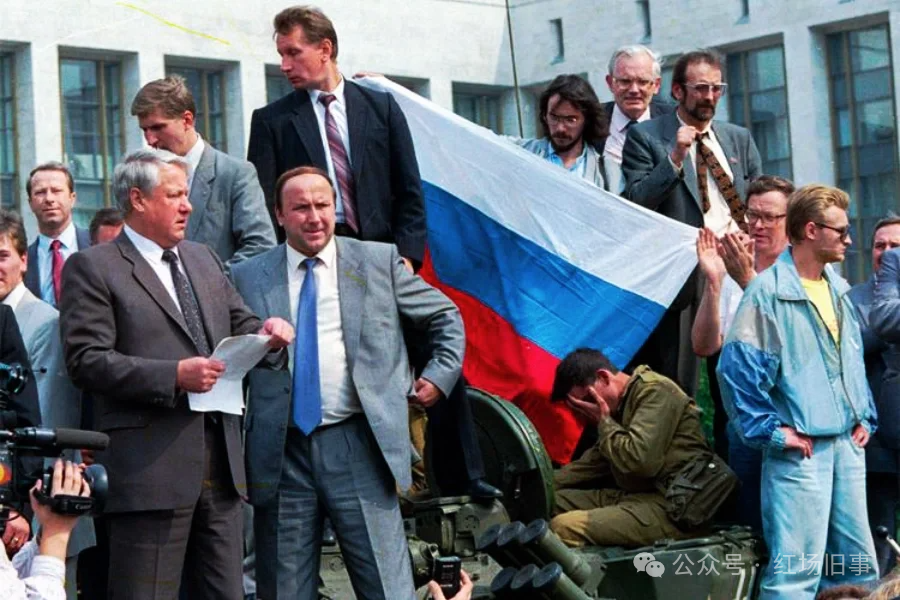
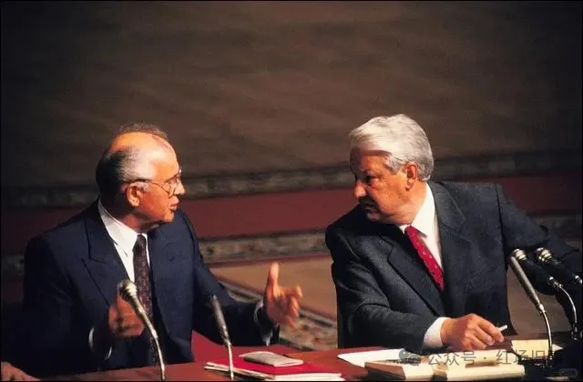
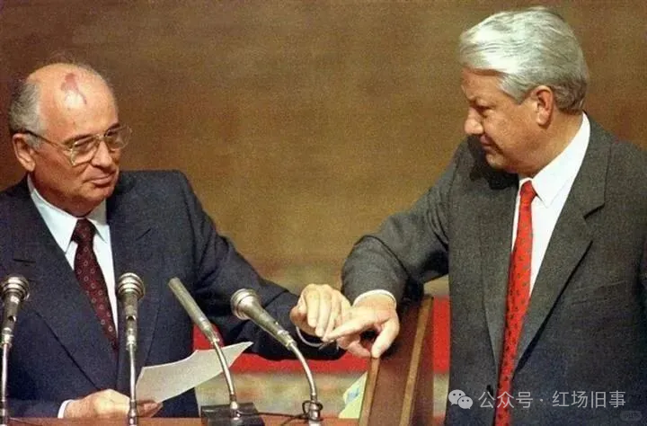
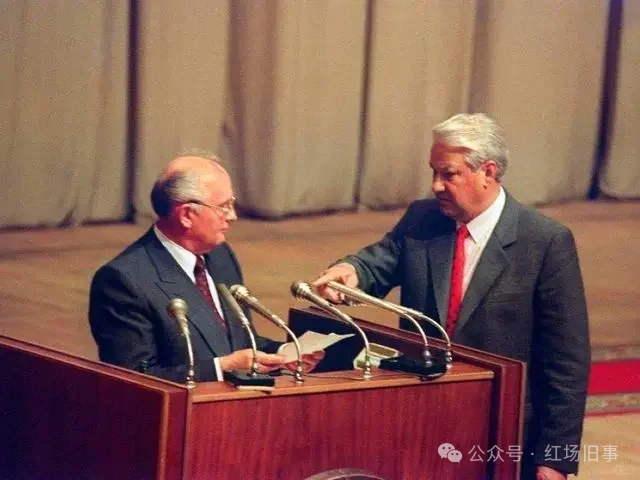
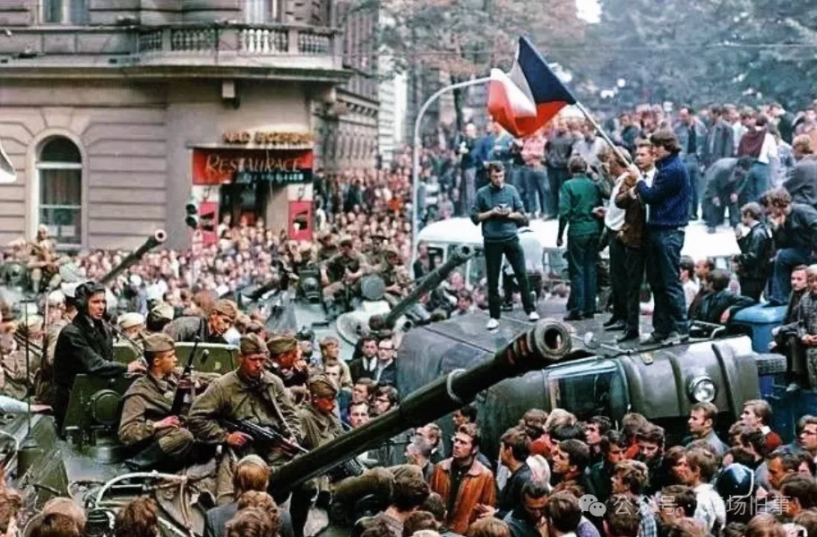

保守派的最后一搏：他们想救苏联，却亲手杀死了它
文字与图片版权归各自权利人所有。 查看公众号原文 ↗
1991年8月19日清晨，莫斯科还在睡梦中的莫斯科人被收音机里的声音惊醒——“苏联副总统亚纳耶夫”宣布：戈尔巴乔夫因“健康原因”无法履职，国家进入紧急状态，一个名为“国家紧急状态委员会”的机构接管权力。人们走到窗前，看到更惊人的场景：坦克正从四面八方开进莫斯科。T-72主战坦克碾过柏油马路，停在俄罗斯联邦议会大厦周围。

这是1968年以来，苏军坦克第一次出现在自家首都的街头。政变者以为坦克能吓住所有人，却不知这反而让民众倒向了另一方。接下来的三天，改变了世界。
一、政变者：一群颤抖的“救世主”政变的核心人物是一群老人：亚纳耶夫（副总统）、克留奇科夫（克格勃主席）、亚佐夫（国防部长）、普戈（内务部部长）。他们平均年龄超过60岁，代表苏联最后的保守势力。他们的动机不难理解：1991年以来，苏联正在快速瓦解。立陶宛、格鲁吉亚已经独立，叶利钦当选俄罗斯总统后公然挑战中央权威，新的联盟条约将大幅削弱中央权力。他们要用坦克、紧急状态和老办法阻止这一切。8月18日，政变者派代表团去克里米亚的福罗斯别墅，要求戈尔巴乔夫签署紧急状态令。遭拒后，戈尔巴乔夫被软禁。第二天凌晨，莫斯科人听到的，就是那个“因健康原因无法履职”的谎言。
二、叶利钦：那个站在坦克上的人政变者犯了一个致命错误：低估了叶利钦。8月19日上午，叶利钦出现在白宫门口。他在随从簇拥下走向一辆T-72坦克，在摄像机注视下爬上炮塔，站直身体，掏出《告俄罗斯公民书》宣读：

“我们呼吁军人不对人民采取行动……”坦克上的士兵面无表情，没有抓他。周围的民众开始聚集，越来越多的人挤向白宫。那一刻，叶利钦从俄罗斯领导人变成了“人民的象征”。他站在坦克上的照片传遍全世界。后来有人说：那张照片，拍下了苏联死亡前的最后一张遗照。8月20日，数万民众走上莫斯科街头，在广场堆起路障保卫白宫。一名叫德米特里·科马尔的年轻人死于流弹，成为这场运动的第一位牺牲者。军队开始动摇。塔曼师和坎捷米罗夫卡师的士兵拒绝向民众开枪，一些部队倒向叶利钦。政变者陷入绝境。
三、三天结束，帝国崩塌8月21日凌晨，政变策划者在克里姆林宫陷入绝望。亚佐夫下令撤走军队，克留奇科夫试图自杀未遂，普戈在寓所开枪自杀。当天下午，政变者代表团飞往福罗斯别墅向戈尔巴乔夫“请罪”。但一切都晚了。8月22日，戈尔巴乔夫回到莫斯科。迎接他的不是欢呼，而是冰冷的现实——权力已经不归他了。叶利钦当着他的面，签署了暂停俄罗斯共产党活动的命令。戈尔巴乔夫试图阻止，叶利钦只是耸耸肩。

8月23日，俄罗斯议会召开紧急会议。叶利钦当着戈尔巴乔夫的面，签署了承认立陶宛、拉脱维亚、爱沙尼亚独立的命令。戈尔巴乔夫坐在台上，脸色铁青。他名义上还是苏联总统，但已经没有人听他的了。
四、苏共被禁：七十年的政党，一夜消失政变失败后，叶利钦做的第一件事是彻底摧毁苏共。8月23日，他下令“中止”俄罗斯共产党活动。8月24日，戈尔巴乔夫辞去苏共中央总书记职务，建议苏共“自行解散”。8月29日，苏联最高苏维埃通过决议，暂停苏共在全国范围内活动。

财产被没收，档案被查封，大楼被贴上封条。一个执政七十多年的政党，几天之内就消失了。没有抵抗，没有声援，没有大规模抗议。为什么？因为苏共早已失去人民信任。1990年民意调查显示：只有不到20%的苏联人相信苏共代表他们的利益。当一栋房子只剩蛀空的柱子，推倒它只需轻轻一推。
五、军队分裂，地方夺权政变的另一个后果，是军队的彻底分裂。国防部长下令军队进城，但关键时刻部队拒绝执行命令。各共和国的军队开始“本土化”——越来越多地服从本国政府而不是莫斯科。苏联军队这支统一力量，在混乱中四分五裂。12月8日，当叶利钦、克拉夫丘克、舒什克维奇签署别洛韦日协议时，没有军队出来阻止。军队自己都不知道该听谁的。政变失败的第二天，乌克兰宣布独立。随后一周内，白俄罗斯、摩尔多瓦、阿塞拜疆、乌兹别克斯坦、吉尔吉斯斯坦相继宣布独立。到9月初，15个加盟共和国中已有12个宣布独立或主权。戈尔巴乔夫试图挽救联盟，但一切都晚了。

12月1日，乌克兰全民公决，90%以上赞成独立。这是压垮骆驼的最后一根稻草。没有乌克兰的苏联，就像没有躯干的头颅。12月8日，俄罗斯、乌克兰、白俄罗斯签署协议，宣布“苏联作为国际法主体停止存在”。12月25日，戈尔巴乔夫辞职，克里姆林宫红旗悄然降下。

八一九政变者想拯救苏联。他们认为强硬手段能阻止分裂，恢复秩序。但他们错了。那一搏，反而加速了苏联死亡。政变前，苏联虽然摇摇欲坠，但还有一个中央，一个总统，一个可能的未来。政变后，中央彻底瘫痪，各共和国不再相信任何“联盟”。更重要的是，政变让人民看清了一个事实：那个曾经让他们恐惧的“国家暴力机器”，已经举不起拳头了。坦克开进莫斯科，却没有一个人向它献花。叶利钦站上坦克，却有千百万人围在它周围。军队拒绝开枪，苏共自行解散，地方纷纷夺权。

三天之内，七十年的帝国，从“可能死亡”变成了“已经死亡”。苏联解体后，一个参加过政变的军官在回忆录里写道：“我们以为可以拯救它。直到最后才明白，我们想救的，只是一个躯壳。灵魂早就没了。”1991年8月的那三天，只是为那个没有灵魂的躯壳，举行了最后的葬礼。